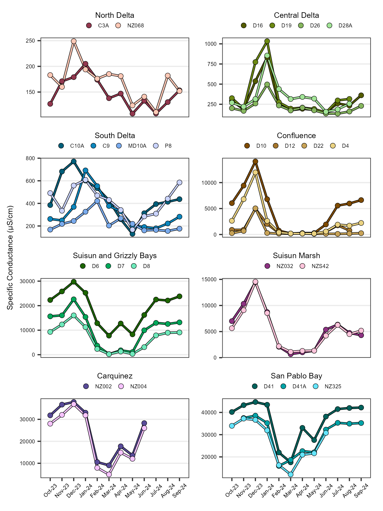
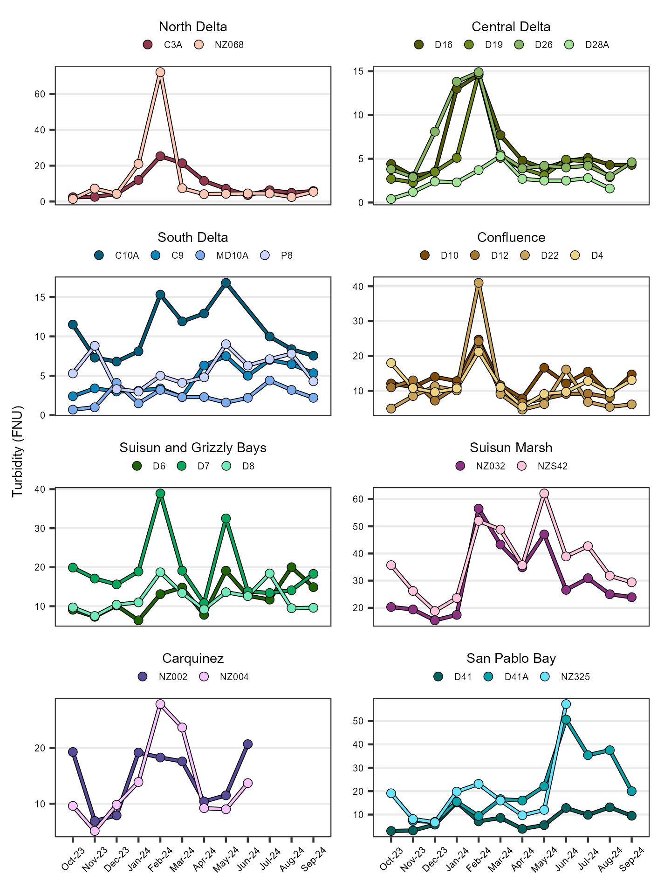
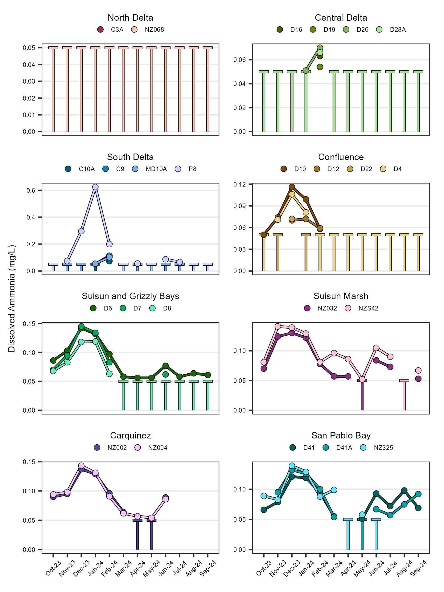
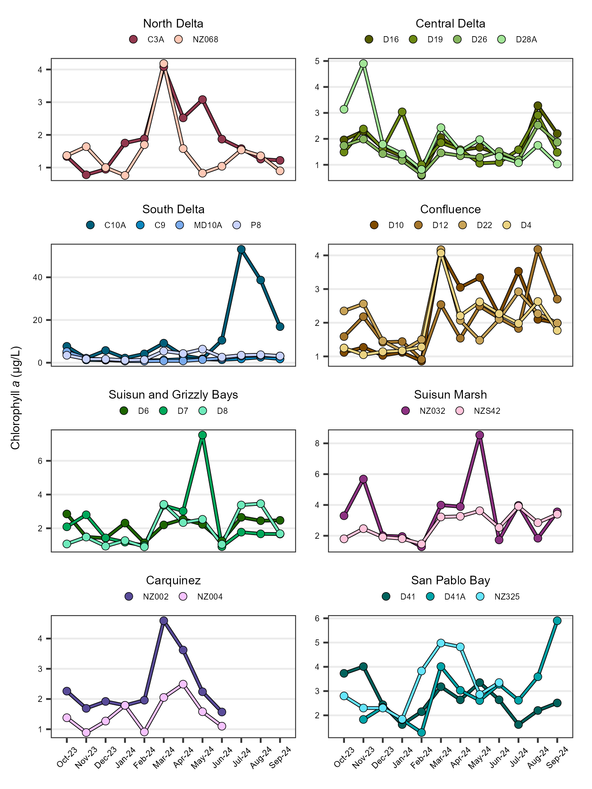
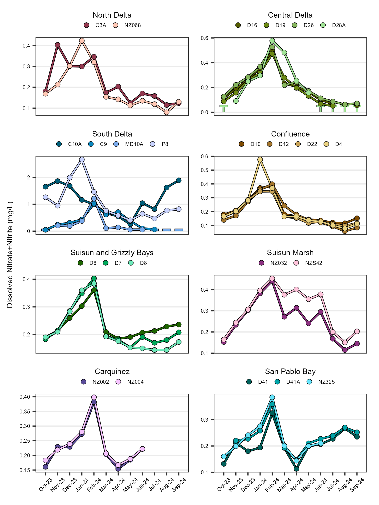
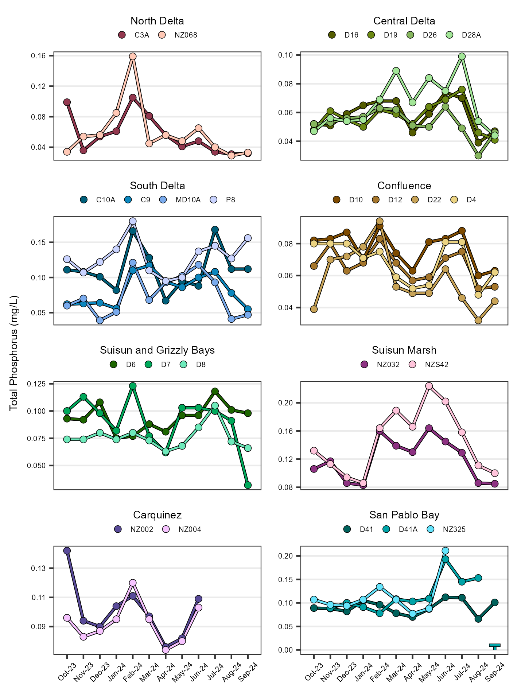

Discrete Water Quality Report
Introduction
The Department of Water Resources (DWR) and the US Bureau of Reclamation (USBR) are required by Water Right Decision 1641 (D-1641) to collect discrete water chemistry data to monitor the water quality at select sites in the upper San Francisco Estuary (Estuary). This report describes the results of these monitoring efforts for water year 2023 (October 1st 2022 through September 30th 2023) which was classified as a wet year in the Sacramento and San Joaquin Valleys (source). Results are compared to the previous water year, which was classified as critically dry in both valleys.
Methods
Discrete water quality samples were collected monthly at 24 monitoring sites throughout the Upper Estuary and were grouped into regions based on their geographic location (Figure 1; Table 1). These sites represent a variety of aquatic habitats, from narrow, freshwater channels to broad, estuarine bays.
| Region | WY Index | Stations |
|---|---|---|
| Carquinez | Sacramento | NZ002, NZ004 |
| Central Delta | San Joaquin | D16, D19, D26, D28A |
| Confluence | Sacramento | D4, D10, D12, D22 |
| North Delta | Sacramento | C3A, NZ068 |
| San Pablo Bay | Sacramento | D41, D41A, NZ325 |
| South Delta | San Joaquin | C9, C10A, MD10A, P8 |
| Suisun and Grizzly Bays | Sacramento | D6, D7, D8 |
| Suisun Marsh | Sacramento | NZ032, NZS42 |
EMP collects data for six different field parameters and 18 different laboratory constituents. The analytes highlighted in this report are:
- Specific Conductance (μS/cm)
- Turbidity (FNU)
- Dissolved Ammonia (mg/L)
- Chlorophyll a (μg/cm)
- Dissolved Nitrate+Nitrite (mg/L)
- Total Phosphorus (mg/L)
Regional facet graphs were created for each parameter. The average, minimum and maximum values were determined for each analyte. Non-detect values were represented graphically via a vertical dashed line capped at the reporting limit. Average summary statistics are reported as the median (M) ± the median average deviation.
For more in-depth methodology, see here.
Results
Specific Conductance
The average specific conductance value was 538 ± 417 µS/cm; for comparison, the previous year average was 5530 ± 5270 µS/cm. Values ranged from 73 µS/cm to 44900 µS/cm. Per region average, minimum, and maximum values are shown in Table 2; time series plots are shown in Figure 2.
| Statistic | Carquinez | Central Delta | Confluence | North Delta | San Pablo Bay | South Delta | Suisun and Grizzly Bays | Suisun Marsh |
|---|---|---|---|---|---|---|---|---|
| Average | 20200 | 217 | 327 | 142 | 29000 | 237 | 6910 | 3540 |
| Min | 350 | 101 | 113 | 102 | 3810 | 73 | 131 | 544 |
| Max | 37200 | 1620 | 14600 | 857 | 44900 | 764 | 32000 | 16000 |

Turbidity
The average turbidity value was 11.10 ± 6.00 FNU; for comparison, the previous year average was 9.05 ± 5.00 FNU. Values ranged from 0.90 FNU to 161.00 FNU. Per region average, minimum, and maximum values are shown in Table 3; time series plots are shown in Figure 3.
| Statistic | Carquinez | Central Delta | Confluence | North Delta | San Pablo Bay | South Delta | Suisun and Grizzly Bays | Suisun Marsh |
|---|---|---|---|---|---|---|---|---|
| Average | 13.10 | 5.75 | 11.10 | 6.10 | 15.00 | 9.16 | 18.00 | 38.80 |
| Min | 6.60 | 1.20 | 5.30 | 1.10 | 4.50 | 0.90 | 5.60 | 13.10 |
| Max | 75.10 | 57.70 | 161.00 | 103.00 | 60.00 | 106.00 | 106.00 | 110.00 |

Dissolved Ammonia
The average dissolved ammonia value was 0.05 ± 0.00 mg/L; for comparison, the previous year average was 0.05 ± 0.00 mg/L. Values ranged from < 0.05 mg/L to 0.67 mg/L. 53.12% of samples were below the reporting limit. Per region average, minimum, and maximum values are shown in Table 4; time series plots are shown in Figure 4.
| Statistic | Carquinez | Central Delta | Confluence | North Delta | San Pablo Bay | South Delta | Suisun and Grizzly Bays | Suisun Marsh |
|---|---|---|---|---|---|---|---|---|
| Average | 0.0815 | 0.05* | 0.05* | 0.05* | 0.074 | 0.05* | 0.056 | 0.0885 |
| Min | 0.05* | 0.05* | 0.05* | 0.05* | 0.05* | 0.05* | 0.05* | 0.05* |
| Max | 0.134 | 0.19 | 0.123 | 0.05* | 0.132 | 0.674 | 0.154 | 0.174 |
| * value is RL |

Chlorophyll a
The average chlorophyll a value was 2.20 ± 0.99 µg/L; for comparison, the previous year average was 2.00 ± 0.81 µg/L. Values ranged from < 0.50 µg/L to 23.70 µg/L. 0.69% of samples were below the reporting limit. Per region average, minimum, and maximum values are shown in Table 5; time series plots are shown in Figure 5.
| Statistic | Carquinez | Central Delta | Confluence | North Delta | San Pablo Bay | South Delta | Suisun and Grizzly Bays | Suisun Marsh |
|---|---|---|---|---|---|---|---|---|
| Average | 2.54 | 1.58 | 2.05 | 1.98 | 3.375 | 2.52 | 2.58 | 2.21 |
| Min | 0.56 | 0.50* | 0.61 | 0.53 | 0.50* | 0.57 | 0.83 | 0.99 |
| Max | 4.87 | 7.95 | 5.42 | 5.45 | 16.5 | 23.70 | 6.79 | 9.46 |
| * value is RL |

Dissolved Nitrate + Nitrite
The average dissolved nitrate+nitrite value was 0.22 ± 0.11 mg/L; for comparison, the previous year average was 0.29 ± 0.14 mg/L. Values ranged from < 0.05 mg/L to 2.90 mg/L. 2.78% of samples were below the reporting limit. Per region average, minimum, and maximum values are shown in Table 6; time series plots are shown in Figure 6.
| Statistic | Carquinez | Central Delta | Confluence | North Delta | San Pablo Bay | South Delta | Suisun and Grizzly Bays | Suisun Marsh |
|---|---|---|---|---|---|---|---|---|
| Average | 0.25 | 0.178 | 0.21 | 0.22 | 0.24 | 0.3805 | 0.269 | 0.26 |
| Min | 0.06 | 0.05* | 0.08 | 0.11 | 0.06 | 0.05* | 0.05* | 0.09 |
| Max | 0.73 | 2.61 | 1.13 | 0.56 | 0.71 | 2.9 | 0.792 | 0.78 |
| * value is RL |

Total Phosphorus
The average total phosphorus value was 0.10 ± 0.02 mg/L; for comparison, the previous year average was 0.10 ± 0.03 mg/L. Values ranged from 0.03 mg/L to 0.50 mg/L. Per region average, minimum, and maximum values are shown in Table 7; time series plots are shown in Figure 7.
| Statistic | Carquinez | Central Delta | Confluence | North Delta | San Pablo Bay | South Delta | Suisun and Grizzly Bays | Suisun Marsh |
|---|---|---|---|---|---|---|---|---|
| Average | 0.10 | 0.07 | 0.08 | 0.05 | 0.12 | 0.11 | 0.10 | 0.15 |
| Min | 0.08 | 0.04 | 0.04 | 0.03 | 0.07 | 0.04 | 0.06 | 0.09 |
| Max | 0.18 | 0.24 | 0.25 | 0.19 | 0.23 | 0.50 | 0.22 | 0.26 |

Interpretations
Water year 2023 in the Sacramento and San Joaquin Valleys was classified as wet after three years of drought. Many atmospheric river storms brought considerable amounts of rain starting in late December and colder average temperatures contributed to record snowpack.
Specific conductance had a notable drop in all regions in January due to the influx of freshwater. Most regions continued to have low values throughout the rest of the water year due to snowpack runoff. The San Pablo, Suisun, and Grizzly Bay regions typically have higher values due to the strong marine influence from the Pacific Ocean, and they started to increase again in July. The average specific conductance in water year 2023 was much lower than the previous year. Turbidity had a notable spike in all regions in January due to sediment re-suspension caused by the high flows after a long dry period. Every region (except the Central Delta) had maximum values above 100 FNU. The average turbidity in water year 2023 was higher than the previous year.
Dissolved ammonia, dissolved nitrate + nitrite, and total phosphorus had a notable spike in all regions in January due to increased runoff of organic matter and pollutants. The Southern Interior Delta region had the highest values of all three nutrients likely due to nearby agricultural land use. The average of each nutrient in water year 2023 was similar to the previous year.
Chlorophyll a followed seasonal trends in most regions with higher values in the warmer summer months. The San Pablo Bay region had a small harmful algal bloom of Heterosigma akashiwo in July. C10A in the Southern Interior Delta had a spike in August, which is typically shallow during dry periods of the year. The average chlorophyll a in water year 2023 was a little higher than the previous year. More information about the phytoplankton genera is described in the phytoplankton section.
Archived Reports
Previous EMP discrete water quality reports can be found here.